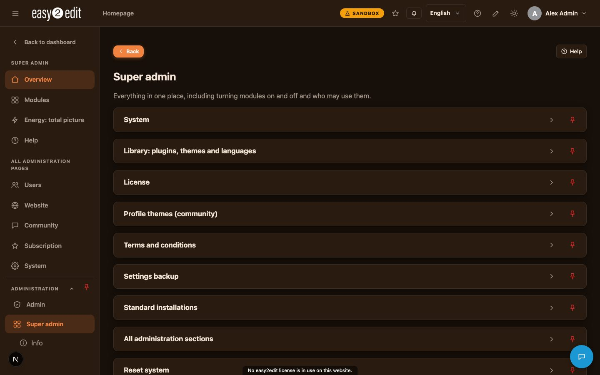

2. Getting started
Video: Choose a standard installation (English voice-over also in Nederlands)

First login#
Log in to easy2edit for the first time as superadmin. The superadmin account has full access to every module and setting, so this is the role you use to get the website up and running.
If you are running easy2edit on your own computer (localhost), the system will immediately ask whether you want to switch the sandbox on. This is worth thinking about before you continue, because it affects how the rest of the setup behaves.

Sandbox mode#
The sandbox is a safe testing environment. When it is switched on, payments, e-mail, SMS and the tests of API links are only simulated. Nothing real is sent and nothing real is charged, even if you have already entered live API keys.
Your answer to this first question is remembered, so you will not be asked again automatically. If you change your mind later, you can switch the sandbox on or off at Admin > Sandbox.
While you are testing, setting up users, or trying out modules, it is usually safer to keep the sandbox switched on. Switch it off once you are ready to go live and want real payments, e-mails and SMS messages to be sent.

Standard installation#
If nothing has been installed yet on your site, a pop-up will appear offering a standard installation. This pop-up has two tabs:
- Installation: lets you choose and apply a ready-made standard installation.
- Filling with AI: explains that your website can also be filled using AI, for example by importing an existing website, translating it, or improving it with your own instructions. This tab also shows whether an AI link is already available.
Pick the tab that matches what you want to do first. You can always return to standard installations later through Admin > Standard installations or the Super admin overview.

Filling your site with AI#
Once a standard installation has been set, the system asks whether you would like to use AI to fill the site. If you answer yes, you are taken straight to buying AI credit.
A welcome pop-up then explains what AI credit is and lets the superadmin put the credit settings in place. Full details on buying and managing AI credit are covered in the AI chapter.
If you prefer to fill the site manually for now, you can skip this step and come back to AI-assisted filling at any time.
Setting up the basics#
Once the initial choices are made, work through the following basic settings to get your site ready:
- Go to Admin > System and fill in the site name, company data, contact data and addresses.
- Choose a standard installation, either from the Super admin overview or at Admin > Standard installations, if you have not already done so.
- Go to Admin > Theme and Logos & images to choose a theme and upload your logos.
- Go to Admin > Languages to choose which languages your site will use.
- Go to Admin > Users and Roles to create the user accounts and roles your team needs.
These five steps give your site its identity, look and feel, language setup, and the people who can manage it.
Modules#
easy2edit is built from modules that you can switch on or off depending on what your website needs, for example pages, media, the webshop-related modules, messaging, security features and more. Each module adds its own settings screen under Admin.
Module management itself is only available to superadmins. As you continue setting up your site, explore the Admin menu to find the modules that are relevant to you, and switch on the ones you plan to use.
What to do next#
After completing the steps above, your site has its basic identity, a theme, languages, and the first users and roles in place. From here you can move on to filling in pages and content, configuring the modules you need, and, if you chose to do so, using AI credit to help populate the site. The following chapters go into each of these areas in more detail.